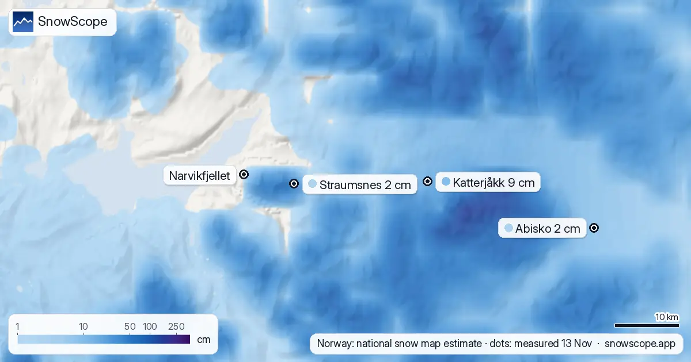

Snøforhold i Narvikfjellet: hvitt fra rundt 800 m, bart ved fjorden (14. november 2026)
Narvikfjellet ligger på en bratt gradient fra fjord til fjelltop. Den 14. november viser kartet nysnø bare over 800 m: cirka 50 cm på toppen, men bare 2–3 cm lavere og bart underlag ved foten. Den nærmeste værstasionen, Straumsnes på 200 m, målte 2 cm morgenen den 13. november.
Se snøprognosen for Narvikfjellet Ski Resort direkte i SnowScope-appenSnødybde, puddervarsler og 3D-kartet, gratis.

Høyden bestemmer alt
Denne bakken har to helt forskjellige snøverdener. Over 844 m viser kartet 35 cm eller mer. Under 500 m er det nesten ingenting. Den skarpe grensen betyr mye for dagen din: de øvre heisene betjener skikkelig skistedterreng, mens de lavere løypene er tynne eller bare.
Katterjåkk, en stasjon ved grensen til Sverige på 514 m og 29 km unna, målte 9 cm den 13. november. Det er høyere enn Narviks base, men likevel langt mindre enn på midtbakkene. Hoppet i dybde over bare 300 høydemeter viser at selv små snøfallforskjeller på dette terrenget er reelle.

Hva som falt den siste uken
Mellom 6. og 13. november kom det cirka 20 cm snø på midtbakkene og toppen. Basen fikk bare cirka 4 cm, og ikke alt av det holdt seg; mye av det kan ha smeltet eller blåst bort ved fjorden.
Værmønsteret var typisk for denne bredden på midthøsten: noen snøpulser i kaldere perioder, så oppklaring. Kystplasseringen gjør at basen forblir varmere enn høydene, så snøgrensen skifter kraftig ved hver værendring.
Neste sju dager
Kartet gir prognose om cirka 9 cm på både midtbakkene og toppen de neste sju dagene, og cirka 6 cm på basen. Viktigst er at lufttemperaturen ventes å falle nok til at eventuell nysnø på basen ikke smelter med det samme. Bare cirka en sjettedel av nedbøren på basenivå forventes å falle som regn; resten blir snø.
Dette er vendepunktet. Hvis prognosen slår til, vil det lavere terrenget endelig få et tynt men sammenhengande hvitt dekke ved slutten av november, i stedet for å forbli stort sett bart.
Hvordan dette sammenligner seg med tidligere år
Over de siste 46 vintrene bringer 14. november vanligvis 86 cm på toppen, 60 cm i midthøyden og 36 cm på basen. Dagens topdybde på cirka 50 cm er cirka 40 cm under normalen. Ved midten av desember blir gapet enda større: mediandybdene ved 15. desember er 129 cm på toppen, 100 cm i midthøyden og 69 cm på basen.
Tidlig november er alltid tynn på denne bredden, men Narvikfjellet ligger lenger nord enn de fleste norske bakker, så sesongen bygges opp sakte. Første varige snø kommer omkring midten av september, og toppen forblir hvit i cirka 300 dager. Det gode er at den lange loggen viser ingen langsiktig nedgang her: toppene på toppen var i gjennomsnitt 288 cm i de eldste 15 vintrene og 286 cm i de nyeste 15.
Når du kan vente åpning
Bakken sine offisielle season går fra 3. januar til 2. mai 2027, med en merknad om at åpningen avhenger av nok snøproduksjon og tilstrekkelig kalde netter i desember. Denne timeplanen gir mening: ved begynnelsen av desember er typisk dybde allerede 129 cm på toppen, og ved jul når det cirka 146 cm.
I de korteste novemberdagene er det bare få timer brukbar lys på bakken. Enhver tur i de neste to ukene krever planlegging omkring middag-skiing.
Sikkerhet og praktiske merknader
Terreng over den øvre heisen på 1 002 m er alvorlig skredterreng. Før du går utenfor løypene, sjekk siste varsel fra Varsom, som dekker denne regionen.
Vind fra Vestfjorden kan stenge de øvre heisene brått, selv når snøforholdene er gode. Spør om daglig heisstatus om morgenen før du går opp. I midten av november skifter været fort.
Tips til skiløpere
- Planlegg skiseturen din mellom 11:00 og 14:00 for å bruke det tilgjenglige lysene fullt ut; soloppgang er sent og solnedgang tidlig på denne bredden.
- Øvre heiser når terreng med 35–50 cm dekke; lavere løyper har tynn snø. Velg høyden basert på hva du trenger: mer dekke eller mindre bratt terreng.
- Følg værmeldingen tett. Forskjellen mellom regn på basen og snø på 500 m er liten, men avgjørende; kuldekast tilføyer dekke raskt.
- Les snøskredvarselet fra Varsom før eventuell skiøing utenfor løypene over 1 002 m. Tidlig-sesong-snø kan være ustabil på bratte bakker.
- Fjordvinden er reell og kan stenge heisene. Hvis den øvre stasjonen er stengt om morgenen, kan den forbli stengt; planlegg et alternativ eller kom tilbake en annen dag.
Om tallene
Snødybdene for skistedene er det dypeste snødekket i de øvre bakkene på datoen som vises; de er anslag for et område, ikke en måling i ett punkt. Prognoser kan endre seg. Les alltid det offisielle snøskredvarselet før du kjører utenfor preparert løype.
Offisielle snøskredvarsler: Varsom (NVE)
Siter denne rapporten
For forskning, undervisning eller presse: tallene og diagrammene kan brukes fritt under CC BY 4.0 med denne kildehenvisningen.
SnowScope (2026), Snøforhold i Narvikfjellet: hvitt fra rundt 800 m, bart ved fjorden (14. november 2026), https://snowscope.app/blog/nb/2026/11/narvikfjellet-snow-conditions-14-november-2026.html, hentet 2026-11-14
SnowScope (Atlas Labs). (2026, November 14). Snøforhold i Narvikfjellet: hvitt fra rundt 800 m, bart ved fjorden (14. november 2026). SnowScope snow reports. https://snowscope.app/blog/nb/2026/11/narvikfjellet-snow-conditions-14-november-2026.html
BibTeX
@misc{snowscope2026narvikfjelletsnowconditi,
author = {{SnowScope (Atlas Labs)}},
title = {Snøforhold i Narvikfjellet: hvitt fra rundt 800 m, bart ved fjorden (14. november 2026)},
year = {2026},
month = nov,
howpublished = {\url{https://snowscope.app/blog/nb/2026/11/narvikfjellet-snow-conditions-14-november-2026.html}},
note = {Published 2026-11-15 09:34 UTC; accessed 2026-11-14}
}· CC BY 4.0 · Metoder, data og verktøy →
Følg Narvikfjellet Ski Resort
Gratis: en melding når nysnø er på vei, og prognosen hver morgen.